Side projects · 2026
AI experiments
A route-planning runner’s map, a space game for the browser, a seasonal produce calendar and an iPhone app for fuel prices. Four things I made with AI tools, outside client work.
- 01 · Roam ↓
- Running routes past sights you’d miss, without accounts or GPS bloat.
- 02 · Wayward ↓
- A 3D space-survival game for desktop and phone browsers. Still being built.
- 03 · Erntereif ↓
- A seasonal calendar of what’s being harvested near you, month by month.
- 04 · Tanken ↓
- An iPhone app for German fuel prices, and whether to fill up now or wait.
01Roam
Discover a city, one run at a time.
Choose how far you want to run and what you’d like to see. Roam builds a runnable loop past the sights.
No account. No GPS tracking. No social feed. Just a different way to explore.
Open Roam ↗︎- The brief
- When I’m somewhere new, often I want to head out for a run and explore the local area, not spend twenty minutes planning a route.
- The challenge
- Route generation without the bloat. Major running apps are cluttered with GPS telemetry, logins, and social feeds; the goal was delivering instant, runnable routes.
- Built with
- Expo Web · TypeScript · SVG map rendering
Berlin Cathedral & Old Museum
Why you’ll like it8 sights; 89% smooth; only 520 m of cobbles; quiet streets.
Stops, in running order
Underfoot
- 4.4 km smooth
- 0.5 km cobbles
Heads-ups
- Cobbles at km 2.9–3.1, slippery when wet
- 2 flights of steps
Old Museum & Old National Gallery
Why you’ll like it10 sights; 1.2 km along water; quiet streets.
Stops, in running order
Underfoot
- 5.8 km smooth
- 0.4 km packed gravel
- 0.5 km soft ground
- 0.9 km cobbles
Heads-ups
- Cobbles at km 4.9–5.1, slippery when wet
- Cobbles at km 5.1–5.3, slippery when wet
- 3 flights of steps
Soviet War Memorial & Chapel of Reconciliation
Why you’ll like it10 sights; 2.4 km along water; 1.5 km on soft paths; quiet streets.
Stops, in running order
Underfoot
- 10.0 km smooth
- 1.0 km packed gravel
- 0.5 km soft ground
- 0.7 km cobbles
Heads-ups
- Cobbles at km 3.0–3.3, slippery when wet
- 9 flights of steps
In the app
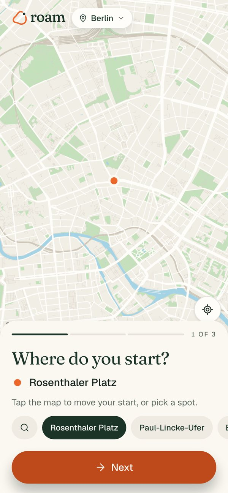
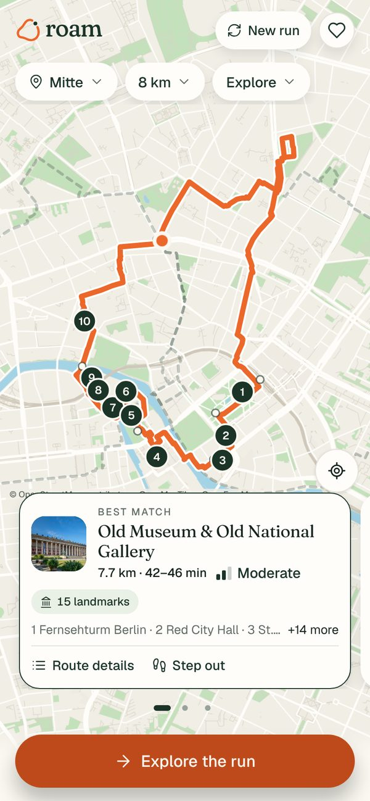


The same 8 km loop in Roam. Photos via Wikimedia Commons: VitVit (CC BY-SA 4.0), A.Savin (CC BY-SA 3.0), Mike Peel (CC BY-SA 4.0), L-BBE (CC BY 3.0)
02Wayward
An ore hauler, a buried secret, a long way to go.
A 3D space-survival space opera built for mobile and desktop browsers. You pilot an aging ore hauler on the run from the authorities: mine asteroids for fuel, refit your ship, and try to stay one jump ahead.
Play Wayward ↗︎- The brief
- A 3D space game with a story behind it, that runs in a phone browser as well as on a desktop.
- The hard part
- Getting the story down. Playtesting every draft, pushing the AI to make both the narrative and gameplay work, while balancing visuals and performance.
- Built with
- TypeScript and Three.js. Its own repo, deployed on its own.
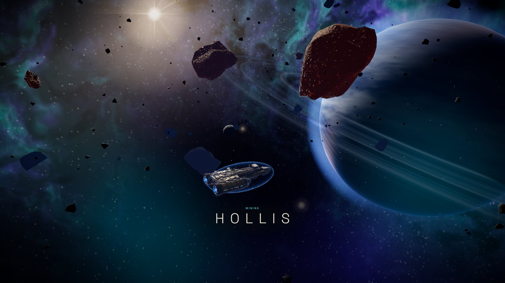
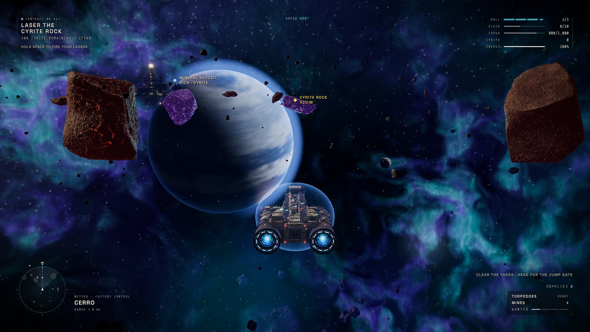
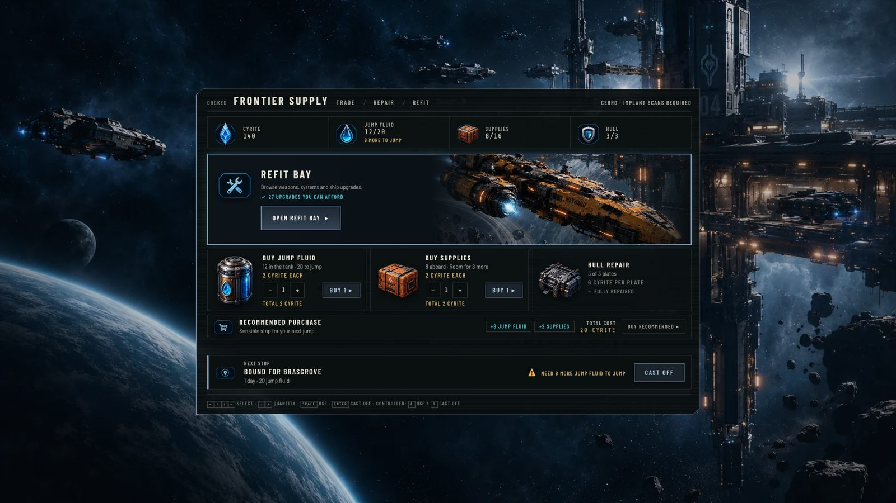
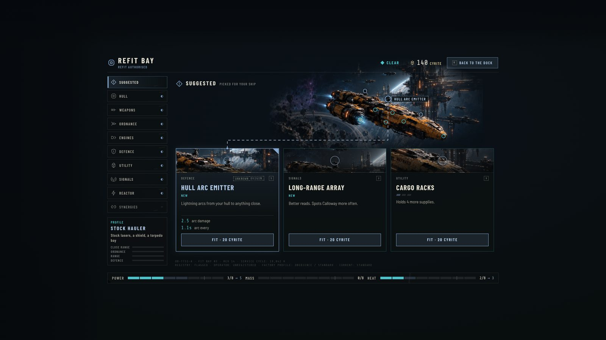
03Erntereif
A seasonal calendar for what’s growing near you.
Pick a month and it shows what’s being harvested, what’s out of cold store, and what the imported version costs in carbon. 87 crops, five countries, German interface.
Open Erntereif ↗︎- The brief
- When I’m food shopping, I want to know what’s in season here right now, so I can buy that instead of something flown in.
- The hard part
- Data integrity and QA. Generative tools draft data in seconds, but reviewing 87 crops meant wrestling with the real question: fact-checking every item by hand versus learning where to trust AI-generated content.
- Built with
- React and TypeScript.
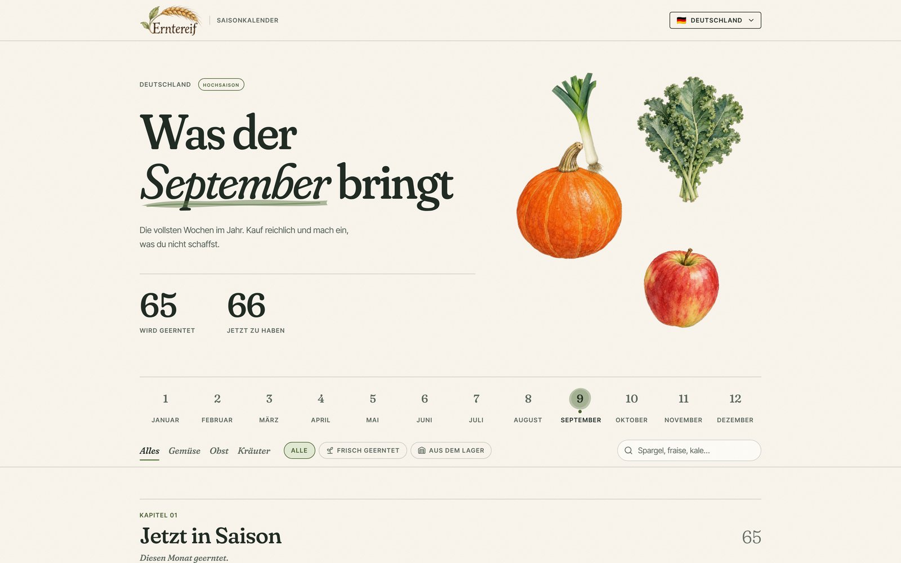
September in Germany. 65 varieties harvested, 66 available once cold store counts
March
9 harvested · 22 available
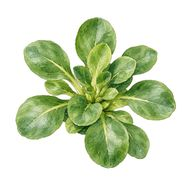
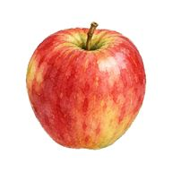
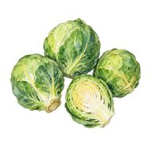
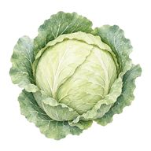
September
65 harvested · 66 available
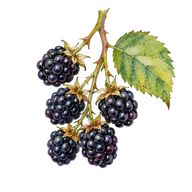
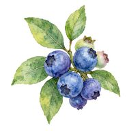
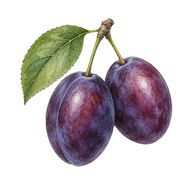
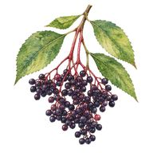
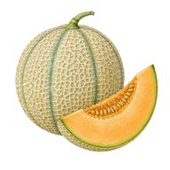
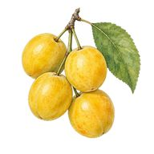
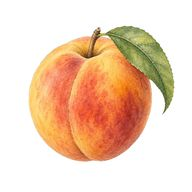
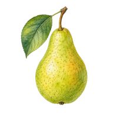
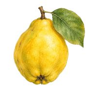
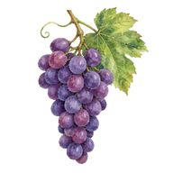
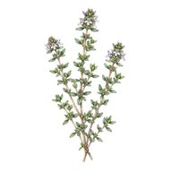
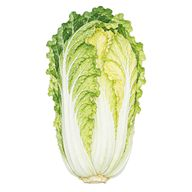
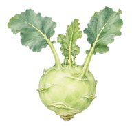
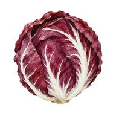
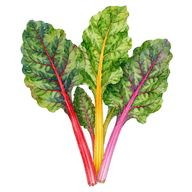
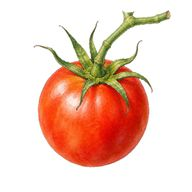
In the app
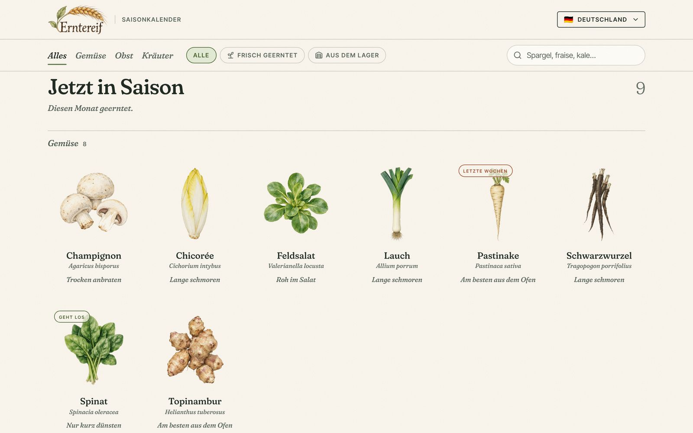

04Tanken
Fuel prices, and whether to fill up now or wait.
German stations have had to report their prices publicly since 2013. Tanken reads that feed and shows today’s average, how it got there, the five biggest chains ranked cheapest first, and a guarded outlook for tomorrow.
- The brief
- When I drive past a petrol station, I want to know whether today’s price is a good one, so I don’t fill up the day before it drops.
- The hard part
- The API hunt. Finding, connecting, and wrangling Germany’s public fuel feeds to pull the raw numbers needed for clean historical trends and a reliable forecast.
- Built with
- SwiftUI. One screen, no tab bar.


05How they were made
Made with a mix of AI tools.
ChatGPT, Lovable and Claude got all four running fast. Building is now far cheaper, and the barriers to starting are much lower.
- Where it helps
- Quick prototyping and development, and working with data. It can surface trends and patterns and turn them into clear visualisations, fast.
- Where it falls short
- Creative thinking and problem solving aren’t there yet. A product worth using still needs research, taste and fine-tuned details, and sometimes less is more.
Client work →
Back to selected work